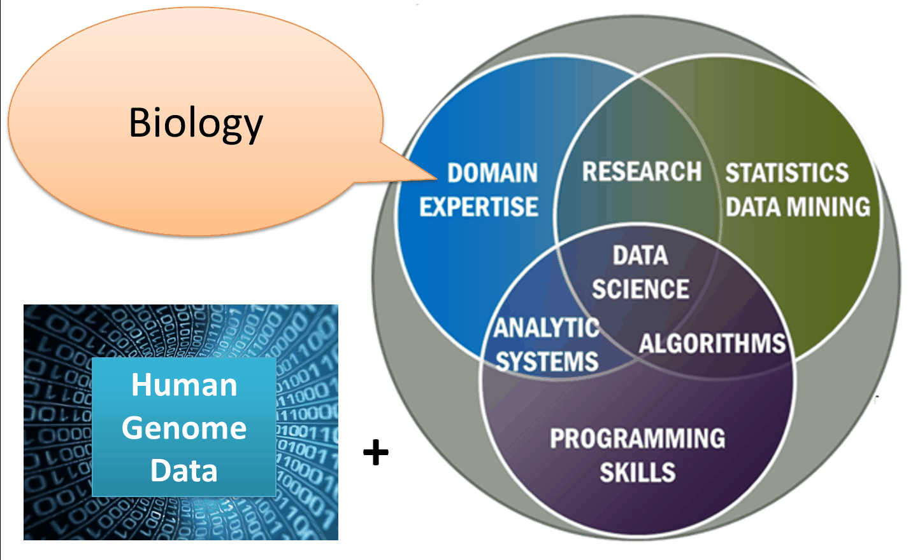

[1] 411 Encuadre
Este capítulo es la versión escrita del deck slides/00-encuadre.qmd. Su contenido proviene de la clase 0 de la edición anterior del curso, reorganizado para leerse fuera del aula.
1.1 Ciencia de datos
La ciencia de datos es un campo interdisciplinario que usa métodos, procesos, algoritmos y sistemas científicos para extraer conocimiento de datos, estén organizados en una tabla o no.
La forma más común de describirla es como la intersección de tres círculos: matemáticas y estadística, cómputo, y conocimiento del dominio.

Ese tercer círculo es el que importa aquí. En biología y salud, el conocimiento del dominio es el que tú ya traes: es la parte que no se aprende en un curso de programación.

1.2 Qué es R
R es un ambiente de software libre para cómputo estadístico y gráficos. Compila y corre en Windows, macOS y Linux.
Lo desarrollaron personas expertas en estadística a partir del lenguaje S, creado por John Chambers y colegas en los Laboratorios Bell (hoy Lucent Technologies).
1.2.1 Ventajas
- Es libre: no depende de una licencia que se venza ni de un presupuesto.
- Las figuras y gráficos que produce son de calidad de publicación.
- Se extiende instalando paquetes.
- Fue hecho por y para gente que analiza datos, no adaptado desde otro fin.
1.2.2 Desventajas
- Requiere tiempo de entrenamiento: para personalizar un resultado hay que conocer el lenguaje.
- Algunos paquetes están mal documentados, abandonados, o no son la mejor herramienta para el problema.
- Ciertas tareas se resuelven más fácil en otro lenguaje.
1.3 Qué es RStudio
Un ambiente de desarrollo integrado (IDE): consola, editor, herramientas gráficas y manejo del área de trabajo en una sola ventana.
R es el motor; RStudio es el tablero desde el que lo manejas. Puedes usar R sin RStudio, pero es más incómodo.
1.4 Dónde vamos a trabajar
En este curso no instalas nada. Usamos Posit Cloud: el mismo RStudio, corriendo en un servidor en vez de en tu computadora. Se abre en el navegador con una cuenta gratuita.
La razón es práctica. Instalar R y RStudio en cada computadora convierte la primera sesión en soporte técnico —versiones distintas, permisos de administrador, antivirus— y se va la clase sin haber escrito una línea de R. En la nube todas trabajamos sobre el mismo R, con los mismos paquetes, y un problema se resuelve una sola vez.
No es una versión reducida: lo que aprendas aquí funciona igual el día que instales R en tu máquina.
Cómo crear la cuenta y qué esperar del plan gratuito: ver el anexo de Posit Cloud.
1.5 Por qué escribir el análisis
En una hoja de cálculo, las operaciones se hacen a mano y no queda registro de ellas. Seis meses después nadie —ni tú— puede decir con certeza qué celdas se tocaron.
En R, cada paso se escribe como una instrucción, y el archivo de instrucciones es el registro del análisis. Si un revisor pregunta cómo obtuviste una cifra, la respuesta es ese archivo: se vuelve a correr y produce el mismo resultado.
Esa propiedad se llama reproducibilidad y es la razón de fondo de este curso.
1.5.1 Un primer ejemplo
La primera línea guarda cinco edades en un objeto llamado edades. La segunda pide su promedio.
El nombre va en plural a propósito: guarda cinco valores, no uno. En la sesión 01 se usa edad para un solo número y edades para el vector, y conviene que diga lo mismo desde aquí.
1.6 De qué trata el curso
Un curso introductorio para aprender a programar en R y adquirir nociones de cómo analizar tus propios datos. No se requieren conocimientos previos de programación.
1.7 Evaluación
| Componente | Peso |
|---|---|
| Tareas en DataCamp | 20 % |
| Primer examen | 25 % |
| Segundo examen | 25 % |
| Proyecto final en R | 30 % |
Asistencia mínima: 80 %.
Criterios heredados de la edición anterior del curso. Se confirman para el semestre 2027-1 en docs/programa-operativo/.
1.8 Material de apoyo
Además del material de este repositorio, el curso ha usado DataCamp a través del programa DataCamp for the Classroom, que da acceso completo a la plataforma mientras el curso esté inscrito.
Lecturas de apoyo sobre qué es la ciencia de datos y cómo aprender R:
1.9 Sesión de R
Al cerrar cada análisis conviene registrar con qué versiones se corrió. Es lo que permite explicar, meses después, por qué un resultado cambió:
sessioninfo::session_info()